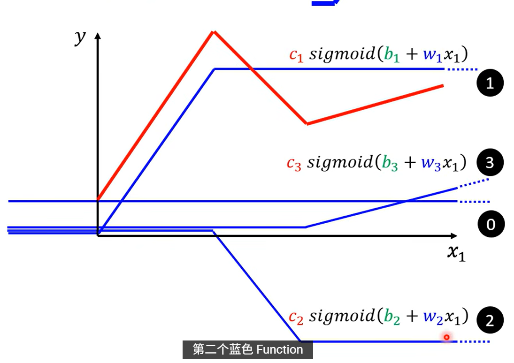
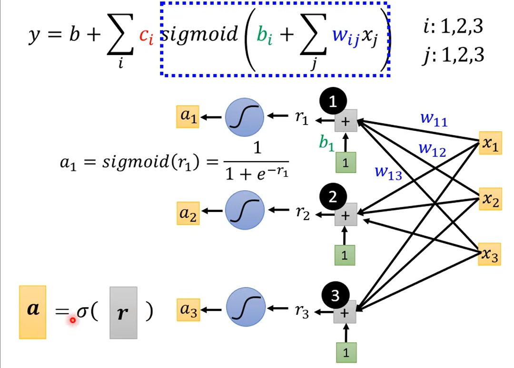

序章2
序章1中使用的只是一次函数，是简单的 linear models，但是现实中往往是更加复杂的模型（sophisticated models）
源自模型自身限制的缺陷称作： Model Bias
选择更好的Model
1.分段线性函数是由常数加上多段线性函数组成的
2.使用足够多的蓝色线性函数可以去逼近非线性函数表示。
3.反之也可以，下面那个是sigmoid函数
4.使用各种sigmoid fuction 的各种变体来逼近hard sigmoid

可以类似得 ：

三个加起来可得：$y=b+\displaystyle\sum_i^3c_isigmoid(b_i+w_ix_1)$
4.模型总结
经过上面的操作和上一节中对多个日期的考虑可得总结后的function：$y=b+\displaystyle\sum_ic_isigmoid(b_i+\displaystyle\sum_jw_{ij}x_i)$ 其中j是对日期的考虑，而i是对多个sigmoid函数的操作。
附图方便理解：

计算loss
将所有未知数合$W,b(向量),c^T,b(常数)$在一起表示为未知数 $\theta$ ，计算损失：$L(\theta)$
假设$\theta$有1000个,那么gradient就有1000行
对g的优化也是一样的， 计算对每个$\theta$ 的偏微分
（注意这里的 $\theta^0$ 是有1000个参数的）
不断优化即可
Batch
在计算loss时会使用到batch，按照一个batch一个batch进行更新参数，
1 epoch = see all the batchs once
ReLU
关于最处的函数处理其实不是只有sigmoid，还有Rectifued Linear Unit（ReLU）表示为 $c \max(0,b+wx_1)$
常常用作激活函数
Sigmoid —> ReLU 需要两倍的ReLU，因为一个hard Sigmod需要两个ReLU来表示。
Deep Learning
Deep = Many hidden layers haha :)
Overfitting
在训练资料上变得很好，但是在测试资料上效果不好
应该选三层的，我们关注的应该是测试资料上的